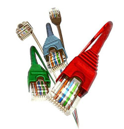

Redes de Computadores
Essa tecnologia tornou-se imprescindível ao funcionamento das empresas e exige constante atualização e especialização dos profissionais. A comunicação de dados e as redes de computadores são essenciais para a vida das pessoas e os negócios. Uma eficiente troca de informações aumenta a produtividade e o resultado dos negócios, por isso estou sempre reforçando os conhecimentos na área para estar apto a realizar o suporte com os melhores recursos para garantir segurança e eficiencia no compartilhamento, configuração e criptografia de dispositivos e arquivos compartilhados na rede.
Usos das redes de Computadores:
As redes de computadores possuem diversas aplicações comerciais e domésticas
As aplicações comerciais proporcionam :
Compartilhamento de recursos: impressoras, licenças de software, etc.
Maior contabilidade por meio de replicação de fontes de dados
Economia de dinheiro: telefonia IP (VoIP), vídeoconferência, etc.
Meio de comunicação e cliente entre os empregados da empresa: e-mail, redes sociais.
Comércio eletrônico.
As aplicações domésticas proporcionam:
Acesso a informações remotas: jornais, bibliotecas digitais,etc.
Comunicação entre as pessoas: twitter, orkut, facebook, messenger, etc.
Entretenimento interativo: distribuição de músicas, filmes, etc.
Comércio eletrônico.
Jogos.